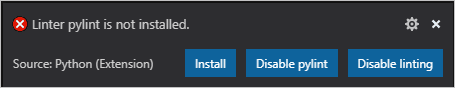
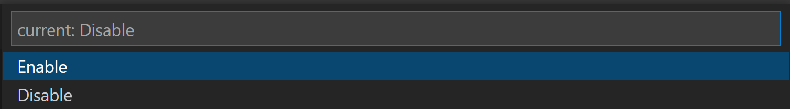

Linting Python in Visual Studio Code
Linting highlights syntactical and stylistic problems in your Python source code, which often helps you identify and correct subtle programming errors or unconventional coding practices that can lead to errors. For example, linting detects use of an uninitialized or undefined variable, calls to undefined functions, missing parentheses, and even more subtle issues such as attempting to redefine built-in types or functions. Linting is thus distinct from Formatting because linting analyzes how the code runs and detects errors whereas formatting only restructures how code appears.
Note: Stylistic and syntactical code detection is enabled by the Language Server. To enable third-party linters for additional problem detection, you can enable them by using the Python: Select Linter command and selecting the appropriate linter.
Enable linting
To enable linters, open the Command Palette (⇧⌘P (Windows, Linux Ctrl+Shift+P)) and select the Python: Select Linter command. The Select Linter command adds "python.linting.<linter>Enabled": true to your settings, where <linter> is the name of the chosen linter. See Specific linters for details.
Enabling a linter prompts you to install the required packages in your selected environment for the chosen linter.

Note: If you're using a global environment and VS Code is not running elevated, linter installation may fail. In that case, either run VS Code elevated, or manually run the Python package manager to install the linter at an elevated command prompt for the same environment: for example
sudo pip3 install pylint(macOS/Linux) orpip install pylint(Windows, at an elevated prompt).
Disable linting
You can easily toggle between enabling and disabling your linter. To switch, open the Command Palette (⇧⌘P (Windows, Linux Ctrl+Shift+P)) and select the Python: Enable/Disable Linting command.
This will populate a dropdown with the current linting state and options to Enable or Disable Python linting.

Run linting
To perform linting, open the Command Palette (⇧⌘P (Windows, Linux Ctrl+Shift+P)), filter on "linting", and select Python: Run Linting. Linting will run automatically when you save a file.
Issues are shown in the Problems panel and as wavy underlines in the code editor. Hovering over an underlined issue displays the details:

General linting settings
You can add any of the linting settings to your user settings.json file (opened with the File > Preferences > Settings command ⌘, (Windows, Linux Ctrl+,)). Refer to User and Workspace settings to find out more about working with settings in VS Code.
To change the linting behavior across all enabled linters, modify the following settings:
| Feature | Setting (python.linting.) |
Default value |
|---|---|---|
| Linting in general | enabled | true |
| Linting on file save | lintOnSave | true |
| Maximum number of linting messages | maxNumberOfProblems | 100 |
| Exclude file and folder patterns | ignorePatterns | [".vscode/*.py", "**/site-packages/**/*.py"] |
When enabling lintOnSave, you might also want to enable the generic files.autoSave option (see Save / Auto Save). The combination provides frequent linting feedback in your code as you type.
Specific linters
The following table provides a summary of available Python linters and their basic settings. For descriptions of individual settings, see the Linter settings reference.
| Linter | Package name for pip install command |
True/false enable setting (python.linting.) |
Arguments setting (python.linting.) |
Custom path setting (python.linting.) |
|---|---|---|---|---|
| Pylint | pylint | pylintEnabled | pylintArgs | pylintPath |
| Flake8 | flake8 | flake8Enabled | flake8Args | flake8Path |
| mypy | mypy | mypyEnabled | mypyArgs | mypyPath |
| pycodestyle (pep8) | pycodestyle | pycodestyleEnabled | pycodestyleArgs | pycodestylePath |
| prospector | prospector | prospectorEnabled | prospectorArgs | prospectorPath |
| pylama | pylama | pylamaEnabled | pylamaArgs | pylamaPath |
| bandit | bandit | banditEnabled | banditArgs | banditPath |
Note: If you don't find your preferred linter in the table above, you can add support via an extension. The Python Extension Template makes it easy to integrate new Python tools into VS Code.
To select a different linter, use the Python: Select Linter command. You can also edit your settings manually to enable multiple linters. Note, that using the Select Linter command overwrites those edits.
Custom arguments are specified in the appropriate arguments setting for each linter. Each top-level element of an argument string that's separated by a space on the command line must be a separate item in the args list. For example:
"python.linting.pylintArgs": ["--reports", "12", "--disable", "I0011"],
"python.linting.flake8Args": ["--ignore=E24,W504", "--verbose"]
"python.linting.pydocstyleArgs": ["--ignore=D400", "--ignore=D4"]
If a top-level element is a single value (delineated by quotation marks or braces), it still appears as a single item in the list even if the value itself contains spaces.
A custom path is generally unnecessary as the Python extension resolves the path to the linter based on the Python interpreter being used (see Environments). To use a different version of a linter, specify its path in the appropriate custom path setting. For example, if your selected interpreter is a virtual environment but you want to use a linter that's installed in a global environment, then set the appropriate path setting to point to the global environment's linter.
Note: The following sections provide additional details for the individual linters linked in the Specific linters table above. In general, custom rules must be specified in a separate file as required by the linter you're using.
Pylint
Pylint messages fall into the categories in the following table with the indicated mapping to VS Code categories. You can change the setting to change the mapping.
| Pylint category | Description | VS Code category mapping | Applicable setting (python.linting.) |
|---|---|---|---|
| Convention (C) | Programming standard violation | Information (underline) | pylintCategorySeverity.convention |
| Refactor (R) | Bad code smell | Hint (light bulbs) | pylintCategorySeverity.refactor |
| Warning (W) | Python-specific problems | Warning | pylintCategorySeverity.warning |
| Error (E) | Likely code bugs | Error (underline) | pylintCategorySeverity.error |
| Fatal (F) | An error prevented further Pylint processing | Error | pylintCategorySeverity.fatal |
Command-line arguments and configuration files
You can easily generate an options file using different methods. See Pylint command-line arguments for general switches.
If you're using command-line arguments:
Command-line arguments can be used to load Pylint plugins, such as the plugin for Django:
"python.linting.pylintArgs": ["--load-plugins", "pylint_django"]
If you're using a pylintrc file:
Options can also be specified in a pylintrc or .pylintrc options file in the workspace folder, as described on Pylint command line arguments.
To control which Pylint messages are shown, add the following contents to an options file:
[MESSAGES CONTROL]
# Enable the message, report, category or checker with the given id(s). You can
# either give multiple identifier separated by comma (,) or put this option
# multiple time.
#enable=
# Disable the message, report, category or checker with the given id(s). You
# can either give multiple identifier separated by comma (,) or put this option
# multiple time (only on the command line, not in the configuration file where
# it should appear only once).
#disable=
If you're using Pylint:
You can create an options file using Pylint itself, by running the command below.
# Using an *nix shell or cmd on Windows
pylint --generate-rcfile > .pylintrc
If you are running Pylint in PowerShell, you have to explicitly specify a UTF-8 output encoding. This file contains sections for all the Pylint options, along with documentation in the comments.
pylint --generate-rcfile | Out-File -Encoding utf8 .pylintrc
pydocstyle
Command-line arguments and configuration files
See pydocstyle Command Line Interface for general options. For example, to ignore error D400 (first line should end with a period), add the following line to your settings.json file:
"python.linting.pydocstyleArgs": ["--ignore=D400"]
A code prefix also instructs pydocstyle to ignore specific categories of errors. For example, to ignore all Docstring Content issues (D4XXX errors), add the following line to settings.json:
"python.linting.pydocstyleArgs": ["--ignore=D4"]
More details can be found in the pydocstyle documentation.
Options can also be read from a [pydocstyle] section of any of the following configuration files:
setup.cfgtox.ini.pydocstyle.pydocstyle.ini.pydocstylerc.pydocstylerc.ini
For more information, see Configuration Files.
Message category mapping
The Python extension maps all pydocstyle errors to the Convention (C) category.
pycodestyle (pep8)
Command-line arguments and configuration files
See pycodestyle example usage and output for general switches. For example, to ignore error E303 (too many blank lines), add the following line to your settings.json file:
"python.linting.pycodestyleArgs": ["--ignore=E303"]
pycodestyle options are read from the [pycodestyle] section of a tox.ini or setup.cfg file located in any parent folder of the path(s) being processed. For details, see pycodestyle configuration.
Message category mapping
The Python extension maps pycodestyle message categories to VS Code categories through the following settings. If desired, change the setting to change the mapping.
| pycodestyle category | Applicable setting (python.linting.) |
VS Code category mapping |
|---|---|---|
| W | pycodestyleCategorySeverity.W | Warning |
| E | pycodestyleCategorySeverity.E | Error |
Prospector
Command-line arguments and configuration files
See Prospector Command Line Usage for general options. For example, to set a strictness level of "very high," add the following line to your settings.json file:
"python.linting.prospectorArgs": ["-s", "veryhigh"]
It's common with Prospector to use profiles to configure how Prospector runs. By default, Prospector loads the profile from a .prospector.yaml file in the current folder.
Because Prospector calls other tools, such as Pylint, any configuration files for those tools override tool-specific settings in .prospector.yaml. For example, suppose you specify the following, in .prospector.yaml:
pylint:
disable:
- too-many-arguments
If you also have a .pylintrc file that enables the too-many-arguments warning, you continue to see the warning from Pylint within VS Code.
Message category mapping
The Python extension maps all Prospector errors and warnings to the Error (E) category.
Flake8
Command-line arguments and configuration files
See Invoking Flake8 for general switches. For example, to ignore error E303 (too many blank lines), use the following setting:
"python.linting.flake8Args": ["--ignore=E303"]
By default, Flake8 ignores E121, E123, E126, E226, E24, and E704.
Flake8 user options are read from the C:\Users\<username>\.flake8 (Windows) or ~/.config/flake8 (macOS/Linux) file.
At the project level, options are read from the [flake8] section of a tox.ini, setup.cfg, or .flake8 file.
For details, see Flake8 configuration.
Message category mapping
The Python extension maps flake8 message categories to VS Code categories through the following settings. If desired, change the setting to change the mapping.
| Flake8 category | Applicable setting (python.linting.) |
VS Code category mapping |
|---|---|---|
| F | flake8CategorySeverity.F | Error |
| E | flake8CategorySeverity.E | Error |
| W | flake8CategorySeverity.W | Warning |
mypy
Message category mapping
The Python extension maps mypy message categories to VS Code categories through the following settings. If desired, change the setting to change the mapping.
| mypy category | Applicable setting (python.linting.) |
VS Code category mapping |
|---|---|---|
| error | mypyCategorySeverity.error | Error |
| note | mypyCategorySeverity.note | Information |
Troubleshooting linting
| Error message | Cause | Solution |
|---|---|---|
| ... unable to import <module_name> | The Python extension is using the wrong version of Pylint. | Ensure that selected interpreter is a valid Python installation where Pylint is installed. Alternately, set the python.linting.pylintPath to an appropriate version of Pylint for the Python interpreter being used. |
| Linting with <linter> failed ... | The path to the Python interpreter is incorrect. | Make sure you selected a valid interpreter path by running the Python: Select Interpreter command (see Environments). |
| The linter has not been installed in the current Python environment. | Open a command prompt, navigate to the location where your selecter interpreter is, and run pip install for the linter. |
|
| The path to the linter is incorrect. | Ensure that the appropriate python.linting.<linter>Path setting for the linter is correct. |
|
| Custom arguments are defined incorrectly. | Check the appropriate python.linting.<linter>Args settings, and that the value of the setting is a list of the argument elements that are separated by spaces. For example, "python.linting.pylintPath": "pylint --load-plugins pylint_django" is incorrect. The correct syntax is "python.linting.pylintArgs": ["--load-plugins", "pylint_django"]. |
Next steps
- Debugging - Learn to debug Python both locally and remotely.
- Testing - Configure test environments and discover, run, and debug tests.
- Basic Editing - Learn about the powerful VS Code editor.
- Code Navigation - Move quickly through your source code.
- Python Extension Template - Create an extension to integrate your favorite linter into VS Code.